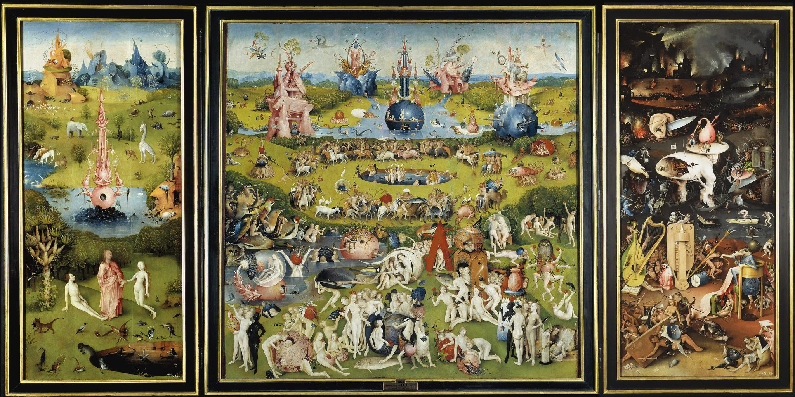

Tablonun içine gir. Küçük bir saka kuşu olarak üç panelin arasında uç. Tabloda 34 sır saklı. Onları bul, Keşif Defteri'ni doldur.
Tablo bir sahne: zürafa, yaban domuzu, saka kuşu, dev balık, kulaklar ve tavşan avcı tablonun üstünde dolaşıyor. Sırları onlarla birlikte yer değiştiriyor.
Önce tabloyu tanımak istersen Hikâyeyi izle: sahneler soldan sağa, yaratılıştan cehenneme sırayla canlanır.
Oyun kuş bakışı başlar: tablonun tamamı önünde serili. İstediğin an İçine dal tuşuyla aralarına in.
Sırra yaklaştıkça alttaki sezgi çubuğu ısınır. Çok yakınında pırıltı görürsün.
Fareyi basılı tutup sürükle ya da AD / oklar: dön · W hızlan · S yavaşla · Boşluk yüksel · Shift alçal · E atıl · B defter · T tablo · M ses · V kuş bakışı / içine dal · fare tekerleği: yakınlaş
boyalar karıştırılıyor…
Tablo: Hieronymus Bosch, Wikimedia Commons (kamu malı). Esin kaynağı: Starry Nightrider.

Altın noktalar bulduğun sırlar, beyaz nokta sensin. Bulamadıkların gizli.